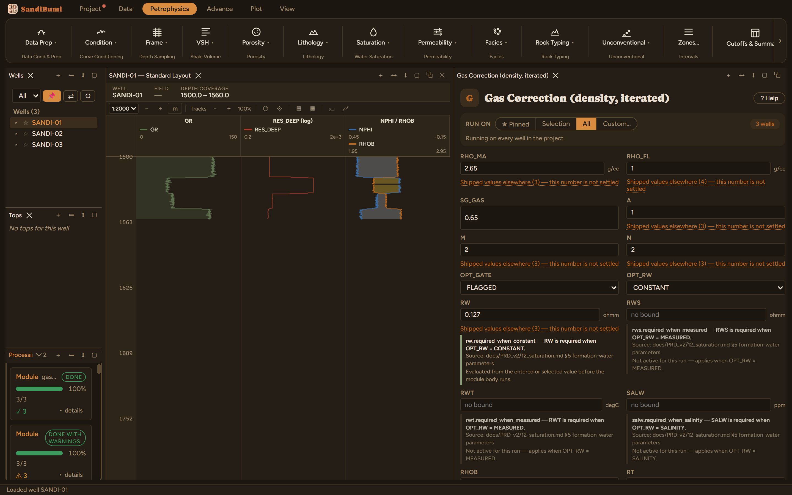

Gas Correction repairs the bulk density log in gas zones. Gas is far
lighter than the water the density-porosity equation assumes in the pores, so
RHOB reads low there and density porosity reads high. This module iterates a
consistent answer for the corrected density, the porosity and the gas
saturation together, and writes RHOB_GC plus the converged PHIT_GC, SWT_GC and
a GASDEN QC curve. Run it after Pre-Calculation (it needs FTEMP and FPRESS)
and after Data Conditioning Flags (its gate consumes XOVER_FLAG).
The physics
Three relations are solved simultaneously per sample: the density equation
with a gas-water fluid mixture, Archie for how much of the pore space is gas,
and a real-gas density for what that gas weighs at reservoir pressure and
temperature (Standing pseudo-critical properties from the gas gravity, then
the compressibility factor). The iteration matters because each relation feeds
the others: lighter fluid means more porosity, more porosity means different
saturation, different saturation means different fluid density.
The picks and why
SG_GAS 0.65: gas specific gravity (air = 1). This is what the
real-gas step turns into a density. Run live on these wells: at 0.65 the
median GASDEN is 0.102 g/cc at reservoir conditions; at 0.8 (a
richer gas) it rises to 0.136 g/cc, and the largest density
correction shrinks slightly (+0.1392 to +0.1357 g/cc), because denser
gas means less mass was missing from the reading in the first place.
A 1, M 2, N 2, RW 0.127 ohmm: the Archie constants the
saturation leg uses. Keep them consistent with the saturation chapter's
picks for the same rocks; here RW is the water-zone value the RtC
calibration fit on these wells.
OPT_GATE FLAGGED (shipped): correct only where the gas-crossover
flag from Data Conditioning Flags is set. The alternative corrects
everywhere the arithmetic moves, which invents gas in shales.
Step by step
Run Pre-Calculation and Data Conditioning Flags first if you have not:
this pane resolves FTEMP, FPRESS and XOVER_FLAG from computed curves.
Open Petrophysics ▸ Data Prep ▸ Gas Correction.
Set the gas gravity and the Archie constants; leave the gate on
FLAGGED.
Fill the custody line and press Run Gas Correction.
The pane asks for the fluid and the Archie constants; the
environment comes from Pre-Calculation's curves.
Reading the result
3 clean. Exactly 265 samples were corrected, the same 265 the
crossover flag marks, which is the gate doing its job. The largest correction
adds +0.139 g/cc to the measured density. Verify the gate
correspondence in the Database Inspector:
SELECT COUNT(*) FROM computed_curves g
JOIN standard_curves s ON g.well_id = s.well_id AND g.depth = s.depth
WHERE g.curve_name = 'RHOB_GC' AND g.value - s.rhob > 1e-6

265 corrected samples, matching the crossover flag exactly.
Outside the gate RHOB_GC equals the measured RHOB.
QC and pitfalls
GASDEN is the sanity check: a reservoir gas density outside roughly 0.05
to 0.25 g/cc means the pressure, temperature or gravity picks are
off.
The correction direction is one-way: it adds density. If corrected
porosity still looks too high in a known gas sand, revisit the crossover
threshold upstream rather than the constants here.
Downstream porosity modules should read RHOB_GC where you trust the
repair; the measured RHOB stays untouched, so both interpretations remain
available.